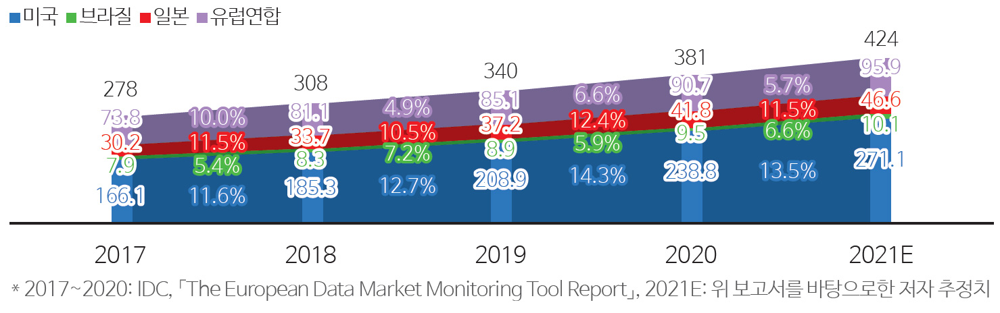
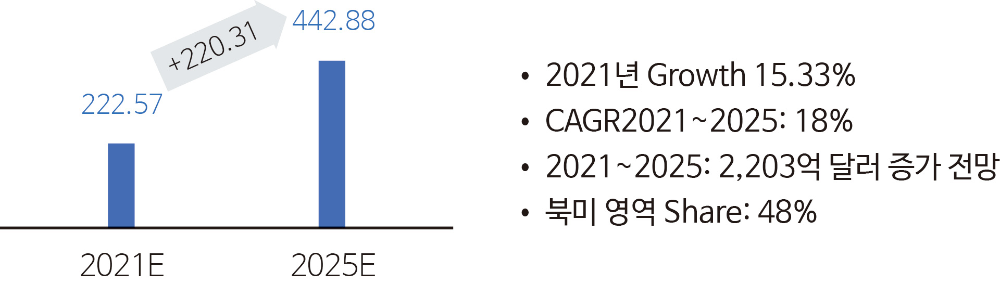
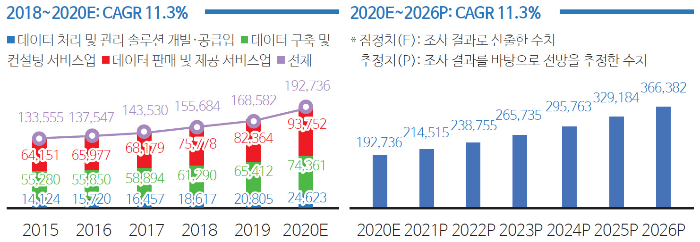
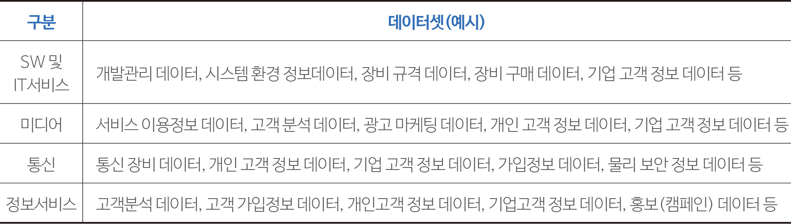
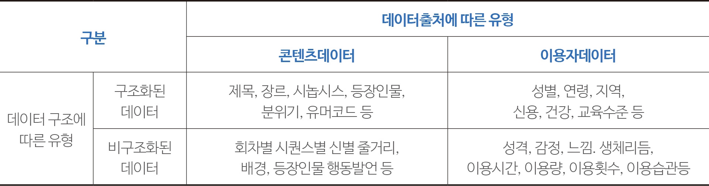
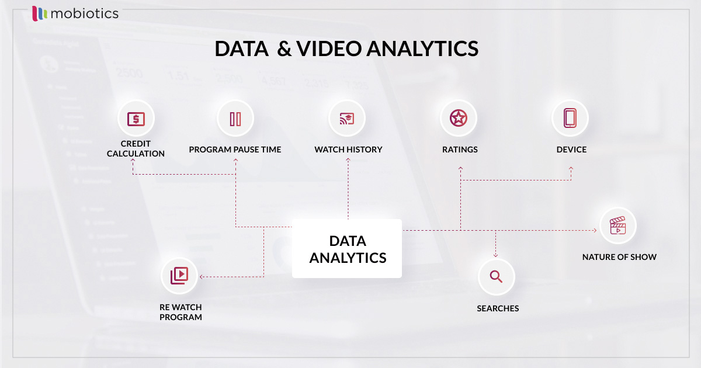
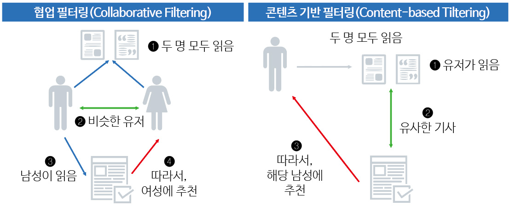
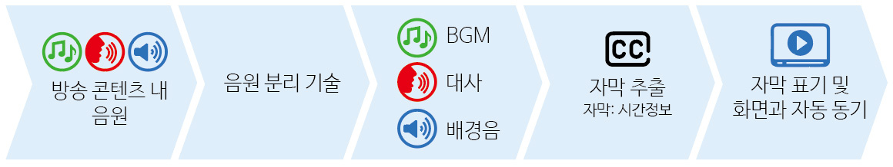
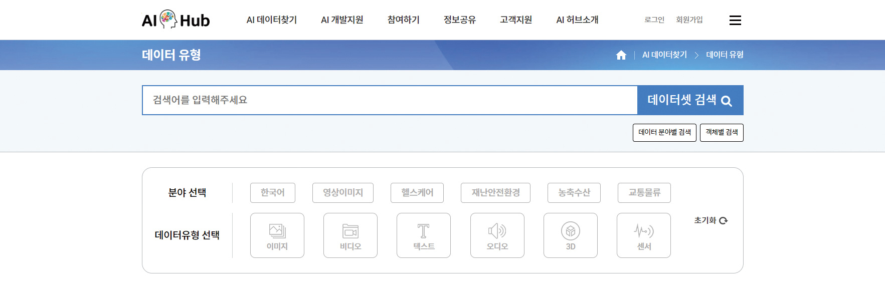
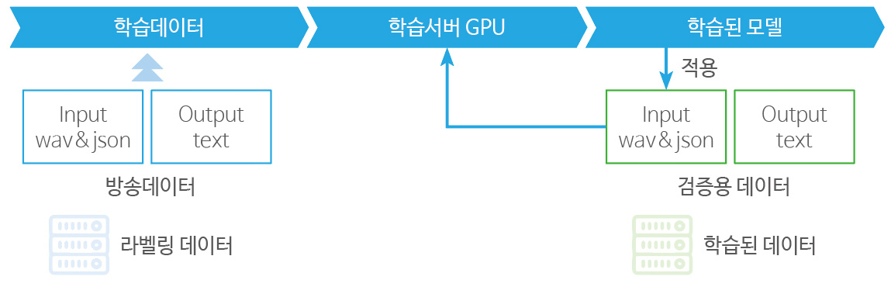

기획 리포트

Featured Report
[ 미디어 산업의 구조 변동과 OTT 경쟁력 원천 ]
동영상 OTT 플랫폼의 데이터 활용을 통한경쟁력 제고 방안
노동환
(콘텐츠웨이브 정책협력부장)
-
OTT 시장에서 사업자 간 경쟁이 심화되면서 사업전략수립 및 점검 등 시장상황에 신속하게 대응하기 위한 데이터 활용의 중요성이 점차 증대되고 있다. 이에 본 글에서는 OTT 사업자들이 데이터를 어떻게 활용하고 있는가에 대해 살펴보고 국내 OTT 플랫폼의 데이터 경쟁력 제고를 위한 미디어 특화 데이터 지원사업 등 정책방안을 제시했다. 또한, 향후 OTT 플랫폼에서 데이터 활용에 걸림돌이 될 관련 규제에 대한 사전 검토를 통해 미래지향적 규제개선의 필요성도 함께 제시했다.
-
1들어가며디지털 혁신 및 플랫폼 경제로의 전환으로 인해 미디어 산업이 빠르게 변화하고 있다. 특히, OTT 플랫폼은 파괴적 혁신을 기반으로 기존 미디어 시장의 구조를 흔들고 신규 시장을 형성하는 등 그 변화를 견인하고 있다. 국내 OTT 이용률만 보더라고 2017년 36.1%에서 2021년 69.5%로 약 2배 가량 증가해 미디어 시장에서 주류 미디어로서 입지를 다지고 있다. OTT 플랫폼의 성장에는 오리지널 콘텐츠 제공과 추천시스템 등 서비스 고도화가 가장 중요한 요인이다.
국내 OTT 시장이 빠르게 포화상태가 되면서 한정된 이용자를 두고 사업자 간 경쟁이 심화되고 있다. 이러한 시장 상황에 신속하게 대응하기 위해 사업 전략 수립 및 점검, 신규 BM모델 발굴 등을 위해 데이터 활용의 중요성이 점차 증대되고 있다.
일반적으로 OTT 사업자들은 데이터를 이용자의 행태분석, 콘텐츠 추천시스템, 사업 및 마케팅, 정산 등에 활용하고 있다. 하지만, 해외사업자 대비 국내 사업자는 데이터 분석 및 활용 범위 등 데이터 경쟁력 측면에서 다소 뒤처지는 것이 사실이다.
아직 OTT 플랫폼에서 데이터 경쟁력 제고를 위한 논의가 부족하다. 다만, 본 글에서는 OTT 플랫폼에서 데이터 중심의 의사결정이 이용자 만족도, 비용 절감, 수익 창출 및 효율성 향상으로 이어질 수 있다는 점에서 향후 논의의 단초를 마련하고자 한다. -
2미디어 데이터에 대한 이해
2.1. 데이터산업 현황
디지털 데이터 시장은 데이터를 가공함으로써 제품 및 서비스로 재생산되는 것으로 정의된다(IDC, 2020). 디지털 데이터 시장에는 이미지 데이터처럼 디지털 기술을 통해 수집·저장·가공·전송되는 멀티미디어 데이터 부문도 포함된다. 데이터를 기반으로 디지털 인프라를 구축하여 신규 제품 및 서비스를 창출하는 이른바 ‘데이터 경제’가 전 산업의 혁신성장을 가속화 할 것으로 보인다.
글로벌 데이터 시장규모는 2017년 2,780억 달러에서 2021년 4,240억 달러로 성장할 것으로 예측했다. 이 중 시장 규모가 가장 큰 미국은 2017년 1,661억 달러, 2020년 2,388억 달러를 기록하였으며 2021년에는 약 2,711억 달러에 이를 것으로 전망했다(IDC, 2020).그림 1글로벌 디지털 데이터 시장규모(2017~2021E)출처: IDC, 「The European Data Market Monitoring Tool Report」, 2020.7.8. 한국데이터산업진흥원, 2021, 재인용
글로벌 빅데이터 시장은 2021년 2,226억 달러에서 2025년 4,429억 달러로 크게 증가할 것으로 전망된다. 이미 2021년에도 15.3%의 높은 성장세를 보였으며 2021년부터 2025년까지의 연평균 성장률은 18%에 달할 것으로 예측된다. 같은 기간 글로벌 빅데이터 시장에서 북미 지역이 전 세계 빅데이터 시장의 약 48%를 차지할 것으로 예상된다(Cision PR Newswire, 2021.9.22.)
국내 데이터 산업 규모는 2019년 기준 16조 8,582억 원으로 2018년 대비 8.3% 성장했고 2020년부터 2026년까지 연평균증가율(Compound Annual Growth Rate, CAGR)은 11.3%로 2026년에는 약 37조 원 대로 확대될 전망이다(한국데이터산업진흥원, 2021)
그림 2글로벌 빅데이터 시장 전망(2021E~2025E)출처: Cision PR Newswire, 「Big Data Market by Type, Deployment, and Geography | Global Forecast to 2025」, 2021.9.22.
그림 3 국내 데이터산업 시장 규모(좌)와 국내 데이터산업 시장 전망(우) 국내 데이터산업 시장 규모(좌)와 국내 데이터산업 시장 전망(우)
2.2. 미디어 데이터 유형
과학기술정보통신부와 한국데이터산업진흥원이 발간한 실태조사에 의하면 정보통신분야를 SW 및 IT 서비스, 미디어, 통신, 정보서비스로 구분하고 있다. 이 중 미디어 분야의 데이터셋은 서비스 이용정보, 고객분석, 광고마케팅, 개인정보, 기업고객 정보 등으로 구분하고 있다.
미디어 분야의 데이터셋을 보다 세부적으로 살펴보면 ‘서비스 이용정보 데이터’는 서비스명, 이용빈도, 요금결제일, 자동결제 여부, 디비이스 코드, 이용시간, 방문일 등으로 구분된다. ‘고객분석 데이터’는 이용자수, 체류시간, 검색 키워드, 검색빈도로 구성된다. ‘광고 마케팅 데이터’는 광고명 코드, 광고노출시간, 광고노출빈도, 디바이스 종류, 광고클릭수, 데이터피드, 활용검색엔진명코드, 광고ID 등이다. 마지막으로 ‘개인고객데이터’는 성명, 연령/나이, 성별, 주소, 전화번호, 이메일이 이에 해당한다.
수많은 콘텐츠와 전 세계 이용자들에 의해 발생하는 데이터는 다양한 플랫폼과 서비스를 통해 저장·분석된다. OTT 플랫폼은 ‘데이터’를 서비스 구축 및 운영 전반에 활용한다는 특징이 있다. 데이터 유형은 크게 두 축으로 구분할 수 있는데 한 축은 데이터 구조에 따른 유형으로 구조화된(정형) 데이터와 비구조화된(비정형) 데이터로 구분된다.표 1 정보통신분야 데이터셋출처: 과학기술정보통신부․한국데이터산업진흥원(2022). 2021년 데이터자원 활용 및 수요현황조사
표 2 데이터 구조 및 출처에 따른 유형 분류출처: 이광석 (2020); Big Data Framework(2019. 1. 9); Weglarz(2004) 등을 참고하여 구성
구조화된 데이터는 대체로 정량 데이터로 분류되며 명확하게 정의되고 검색되고 분석된 데이터다. 비구조화된 데이터는 대체로 정성 데이터로 상황과 맥락에 따라 가변적이며 기존의 도구와 방법을 통해 처리/분석되기 어려운 데이터다. 다른 한 축은 데이터 출처에 따른 것으로 콘텐츠와 이용자 데이터로 구분된다. 두 축을 교차해서 그 안에 포함되는 것들을 정리하면 <표 2>와 같다.
디지털 플랫폼 서비스를 제공하면서 기업은 B2C 등 다양한 사업영역에서 방대한 양의 데이터를 확보하고 있다. 이렇게 확보한 빅데이터는 기업의 중요한 의사결정 및 경영전략 등을 수립하는데 인사이트를 제공한다. 다음으로는 동영상 OTT 플랫폼은 데이터를 어떻게 사업에 활용하고 있는가에 대해 살펴보도록 하겠다. -
3OTT 사업자의 데이터 활용
3.1. 이용자 행동 분석을 통한 경영전략 수립
빅데이터 분석은 숨겨진 패턴, 알려지지 않은 상관관계, 시장동향, 고객 선호도 및 기타 유용한 정보를 찾기 위해 다양한 데이터 유형을 포함한 대규모 데이터를 조사하는 것이다. 이러한 분석은 기업의 중요한 운영 및 경영 결정을 내리는 데 큰 도움을 준다. OTT 사업자에게도 이제 데이터 분석은 사업의 방향성과 전략을 수립하는데 중요한 부분을 차지한다. 예컨대 유료 구독자, 유료 고객비율, 유료 해지율, 성장률 등 데이터 분석을 통해 관련 시장에서의 포지셔닝 및 가치를 판단하는 기준을 수립한다.
ㆍ신규 구독자: 일정 기간 동안 얻은 신규 구독자 수와 이 값의 증가, 포화 또는 감소 여부
ㆍ고객 비율: 얼마나 많은 구독자가 유료 고객이 되는지 식별
ㆍ유료 해지율: 30일 이내에 구독을 취소하는 고객의 평균값
ㆍ성장률: 신규 가입자 수, 고객 비율, 유료 해지율 등 사용 가능한 모든 데이터를 기반으로 한 평균 성장률
위에 제시된 유료 해지율 데이터에 대한 사례를 들면 다음과 같다. OTT 사업자에게 가장 중요한 과제는 수익성 유지를 위해 이용자 유지와 더불어 이탈을 최소화하는 것이다. 이탈을 예측하는 가장 중요한 요소는 이용자가 서비스에서 이용할만한 가치를 얻었는가이다. OTT 사업자는 정확한 이탈 예측을 위해 실시간 및 과거 데이터, 이용자 데이터 및 이용자 행동, 기타 관련 데이터를 분석해 그 원인에 대해 분석하고 문제를 해결하기 위한 사업 전략을 수립한다.3.2. 고객충성도 증대를 위한 추천시스템
OTT 플랫폼은 방송콘텐츠, 영화, 해외시리즈 등 방대한 콘텐츠 라이브러리를 빅데이터를 활용해 이용자에게 추천서비스를 제공 중이다. 추천서비스는 알고리즘을 통해 이용자 성향 및 욕구에 부합하는 최적화된 맞춤형 콘텐츠를 제공하는 기능이다.
OTT 플랫폼 경쟁 환경에서는 추천서비스 제공을 위한 이용자의 행동 데이터, 즉 이용자의 선호와 취향은 중요하다. 추천서비스는 이용자가 콘텐츠 탐색에 소요하는 비용과 시간 등을 절감시켜주는 것으로 최적의 이용조건을 제공하고, 플랫폼이라는 놀이터에서 콘텐츠를 마음껏 향유할 수 있도록 도와준다는 점에서 큰 효용성을 제공한다. 다시 말해 OTT 서비스의 수많은 콘텐츠 속에서 이용자가 개인 맞춤형 큐레이션을 이용함으로써 콘텐츠 선택의 복잡성을 감소시키고 시청 또는 구독 결정의 과정을 단축시킨다. 결과적으로 OTT 서비스의 추천서비스는 이용자에게는 인지적 편안함을 제공해주고 사업자에게는 한정된 자원을 효율적으로 활용하는 전략을 세울 수 있도록 해준다(최선영·고은지, 2018).그림 4 OTT 플랫폼에서의 빅데이터 분석 예시 출처: Medium.com, https://medium.com/mobiotics/big-data-analytics-for-ott-ee7deebd4693
그림 5추천시스템의 방식
추천시스템의 방식은 협업 필터링, 콘텐츠 기반 필터링, 하이브리드 기반 필터링 등 크게 3가지 하위 차원으로 분류한다. 협업 필터링은 이용자 프로필과 콘텐츠 메타데이터보다는 사용자들의 피드백 평가 데이터에 주안점을 둔다. 콘텐츠 기반 필터링은 이용자 프로필을 바탕으로 이용자의 프로필과 콘텐츠의 메타데이터를 매칭하고 이에 이용자 피드백을 더해 알고리즘을 학습시킨다. 하이브리드 기반 필터링은 콘텐츠 기반 필터링과 협업 필터링을 모두 이용해 알고리즘을 학습시키는 것으로 OTT 산업에서는 대부분 하이브리드 기반 필터링을 사용한다(이호수, 2020; 한국방송통신전파진흥원, 2021).3.3. AI 자동자막기술 고도화
국내 OTT 사업자는 국내 이용자 편의(장애인방송 포함)를 위한 한글자막 제공 및 해외 진출 시 영어자막 제작을 위한 한글 스크립트가 필요하다. 하지만 현재는 한글 및 영어 자막을 일일이 제작해야 하는 상황으로 상당한 비용이 수반된다. 이를 해결하기 위한 기술적 방안 중 하나가 AI를 활용한 자동자막기술이다. 달리 말해 자연어 음성인식(Speech-to-Text)은 자유발화 음성을 가독성 있는 텍스트로 자동 변환하는 AI 기술로 머신과의 커뮤니케이션을 인간의 언어로 실현하는 궁극의 인터페이스 또는 인터랙션 기술이다(김상훈, 2022).그림 6인공지능 주요 분야출처: 김상훈(2022). 자연어 음성인식 AI산업동향 및 시사점
그림 7AI 영상 자막 기술 개념도 예시출처: 뉴스핌(2021.10)
콘텐츠웨이브의 경우 관련 사업자 간 컨소시엄을 구축해 구어체 방송콘텐츠를 위한 자동자막 제작·편집 기술 개발을 추진 중이다. 2023년까지 서비스 플랫폼을 구축하고, 2024년에는 플랫폼 확장에 집중하는 등 서비스 고도화를 추진할 계획이다. 또한, 기술개발을 통해 콘텐츠 전용 한국어 음성인식기, 장르별 문맥 기반 기계 번역기, 클라우드 자막 편집 도구 등 다양한 서비스를 개발할 계획이다.
AI 서비스를 고도화시키기 위해서는 품질 좋은 다량의 학습데이터가 필수적이다. AI 서비스 개발에서 자원의 약 80%는 학습데이터를 구축하는 데 사용되기 때문이다. 이를 위해 정부는 2020년 한국판 뉴딜 종합계획을 발표해 디지털 뉴딜 중 데이터댐 사업을 추진 중이다. 데이터댐 사업 중 디지털 경제에 기반이 되는 AI 학습용 데이터를 구축하기 위해 필수적인 언어·이미지·영상 등의 데이터셋을 2025년까지 1,300종을 구축·개방하는 사업을 진행 중이다. 여기서 AI 학습용 데이터는 언어 말뭉치, 음성데이터, 자율주행 영상데이터, 미디어 영상데이터 등을 말한다.그림 8AI 통합 플랫폼 사이트 화면출처: AIHUB1
그림 9AI 모델학습출처: AIHUB2
자동자막기술 고도화를 위해서는 AI기술을 지속적으로 학습시킬 수 있는 상당한 분량의 학습 데이터(일명 말뭉)가 필요하다(그림 9 참조). 하지만, OTT 사업자는 AI 자동자막기술을 개발하거나 이미 상용화된 기술에 대한 접목을 시도 중이나 관련 학습 데이터가 부족하다.
향후 AI 기술 및 데이터는 기업 경쟁력과 서비스를 차별화하기 위한 중요한 요소가 될 것이다. OTT 시장이 빠르게 포화될 경우 이용자 편의를 위한 서비스 제공이 사업의 성패를 좌우할 것으로 보인다. -
4마치며이상 OTT 플랫폼에서 데이터를 경영전략 수립, 추천시스템 개발, AI 서비스 고도화에 어떻게 활용하는가에 대해 살펴보았다. 넷플릭스가 빅데이터를 활용해 오리지널 콘텐츠에 대한 제작 및 투자를 결정하는 등 객관적인 데이터를 통한 경영의사결정을 하는 반면 국내 OTT 사업자의 빅데이터를 활용은 아직 초기 단계 수준이다. 이에 국내 OTT 플랫폼의 데이터 경쟁력 제고를 위한 방안을 간략하게 제시하고자 한다.
OTT 플랫폼에서 서비스 고도화를 위해 콘텐츠와 연관된 다양한 기술 구현이 가능하다. 예컨대 드라마 및 예능 출연진의 얼굴인식기술, 방송영상에 대한 사물인식 기술, 방송영상에 대한 자동태깅기술(마이크로 장르 자동 태깅) 등을 들 수 있다. 이러한 기술의 정확도를 향상시킬 수 있도록 정부에서 미디어 분야에 특화된 데이터 지원방안이 필요하다. 또한, 미디어 분야 데이터 지원 사업은 범정부차원에서 사업을 추진하는 것이 보다 효율적일 것이다.
국내 OTT 사업자가 데이터 분석 및 활용에 있어 겪고 있는 어려움 중 하나는 전문 인력의 부족이다. 데이터 산업에서 데이터 직무의 평균 부족률은 10.6%이나 이 중 데이터과학자의 부족률이 31.4%로 가장 높게 나타났다. OTT 산업 역시 데이터과학자가에 대한 니즈는 있으나 관련 전문인력을 구하기는 어려운 것이 현실이다. 이러한 관점에서 미디어 산업에 특화된 전문인력 양성에 대한 지원방안의 마련이 필요하다.
향후 데이터 경제로의 전환에 따라 데이터 자원의 중요성이 증대될 것으로 예상된다. 이제 “데이터는 보는 것이 아니라 분석하는 것”이라는 관점에서 OTT 플랫폼 사업자는 데이터 경제에 대비해 스스로 경쟁력을 갖춰야 할 것이다. 또한 만약 데이터 활용에 걸림돌이 되는 불필요한 규제가 있다면 미래지향적으로 규제개선이 추진되어야 할 것이다. -
Reference
- 김상훈(2022). 자연어 음성인식 AI산업동향 및 시사점. AI TREND WATCH, 2022-2호, 정보통신정책연구원
- 과학기술정보통신부․한국데이터산업진흥원(2022). 2021년 데이터자원 활용 및 수요현황조사.
- 이호수(2020). 넷플릭스 인사이트. 서울 : 21세기북스
- 최선영 고은지 (2018). 넷플릭스 미디어 구조와 이용자 경험: 행동경제학 관점에서 본 이용자와의 관계 맺기. 방송문화연구, 30권 1호, 7-42
- 한국데이터산업진흥원(2021). 2021 데이터산업 백서. 서울 : 한국데이터산업진흥원
- 한국방송통신전파진흥원(2021). 미디어산업 분야 데이터 기술 활용방안. 나주 : 한국방송통신전파진흥원
- Cision PR Newswire(2021.9.22.). 「Big Data Market by Type, Deployment, and Geography | Global Forecast to 2025」.
- IDC(2020.7.8.). 「The European Data Market Monitoring Tool Report」.